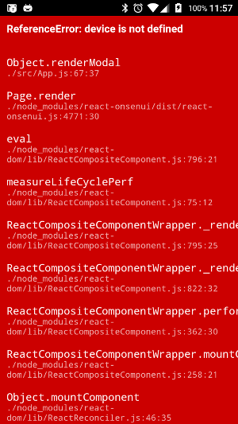
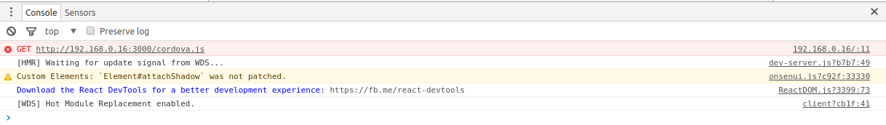
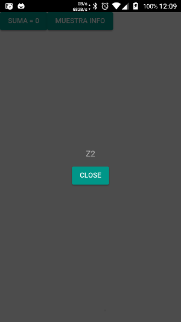

HMR en Cordova
El objetivo ahora es poder utilizar HRM y react-hot-loader pero con la App corriendo en el terminal, y así poder acceder
a una funcionalidad de los plugins en entorno real.
Si recordamos de la instalación anterior, arrancando webpack-dev-server tendremos un entorno servidor web con nuestra
App corriendo y con las herramientas anteriores configuradas. Podremos acceder a esta desde la url http://localhost:3000/
cordova levanta una WebView sobre la que lanza el archivo index.html que está en la carpeta platforms/android/assets/www.
Si vamos hasta el código de la plataforma que ha creado cordova, navegando hasta platforms/android/src/co/hmrtutorial/
veremos la MainActivity.java donde se encuentra el código que lanza la WebView:
public class MainActivity extends CordovaActivity
{
@Override
public void onCreate(Bundle savedInstanceState)
{
super.onCreate(savedInstanceState);
// enable Cordova apps to be started in the background
Bundle extras = getIntent().getExtras();
if (extras != null && extras.getBoolean("cdvStartInBackground", false)) {
moveTaskToBack(true);
}
// Set by <content src="index.html" /> in config.xml
loadUrl(launchUrl);
}
}
El método loadUrl(launchUrl) es el que abre el index.html, y como se indica en el mismo código, se configura modificando
el config.xml, el archivo que crea cordova para definir las propiedades de la aplicación.
Si navegamos hasta ese archivo veremos que como se indica en el código, nuestra App está apuntando al index.html, que será
el que se encuentra en la carpeta platforms/assets/www/:
<content src="index.html" />
Podremos modificar ese content para que apunte a la url de nuestro servidor. Para ello deberemos tener el webpack-dev-server
configurado para que se pueda ver desde IP's que pertenezcan a nuestra misma red, añadiendole --host 0.0.0.0 al arrancar:
"dev": "webpack-dev-server --host 0.0.0.0",
Buscaremos la IP de red de nuestro equipo y añadiremos esta IP junto con el puerto, de la manera http://<ip>:<puerto> al content de nuestro config.xml:
<content src="http://192.168.0.16:3000" />
Ahora arrancaremos de nuevo nuestra App en el terminal, y:
Para solucionar este problema deberemos añadir una nueva propiedad
a nuestro webpack-dev-server:
disableHostCheck: true,
Ahora tendremos corriendo nuestra App dentro del terminal HMR y react-hot-loader pero, ¿qué pasa con cordova?.
Para comprobar que pasa con cordova añadiremos un plugin a nuestra App, por ejemplo el device
que nos permite acceder a la información del terminal sobre el que corre nuestra App. Para ello:
$ cordova plugin add cordova-plugin-device --save
Añadiremos la funcionalidad que hace uso del plugin:
class App extends Component {
constructor(props) {
super(props)
this.state = {
sum: 0,
isOpen: false
}
}
handleClick() {
this.setState({
sum: this.state.sum += 2
})
}
handleInfo() {
this.setState({
isOpen: true
})
}
render() {
return (
<Page renderModal={() => (<Modal isOpen={this.state.isOpen}>
<section style={{margin: '16px'}}>
<p style={{opacity: 0.6}}>
{ device.model }
</p>
<p>
<Button onClick={() => this.setState({isOpen: false})}>
Close
</Button>
</p>
</section>
</Modal>)}>
<Button onClick={this.handleClick.bind(this)}>Suma = {this.state.sum}</Button>
<Button onClick={this.handleInfo.bind(this)}>Muestra info</Button>
</Page>
);
};
}
export default App;
Y al actualizar la App en el terminal, nos dará un error:

cordova crea los plugins como objetos globales, por lo que la linea:
{ device.model }
está generando un error ReferenceError: device is not defined, ya que nuestra App no está haciendo uso de la funcionlidad
de cordova sino que simplemente estś siendo mostrada embebida un WebView dentro de nuestro terminal.
Si comparamos el index.html generado por cordova comparado con el que hemos ido generando nosotros, veremos que nos
falta una referencia a cordova.js que es la librería que da acceso a la funcionalidad de cordova. Si incluimos este archivo
en nuestro index.html:
<script type="text/javascript" src="cordova.js"></script>
obtendremos un error:

Esto es porque ese archivo se ha creado en la carpeta de la platform ya que es diferente para cada plataforma. Podremos
copiar el archivo y los demás archivos que necesita nuestra App de cordova a la carpeta www o podemos apuntar el contentBase
de nuestro webpack-dev-server para que sirva los contenidos de la carpeta donde se encuentra ese archivo. Modificaremos
en el webpack.config.js:
output: {
path: path.resolve(__dirname, 'platforms/android/assets/www/js'),
filename: '[name].js',
publicPath: "/js/"
},
...
devServer: {
contentBase: path.join(__dirname, "platforms/android/assets/www"),
hot: true, // Tell the dev-server we're using HMR,
compress: true,
port: 3000,
publicPath: "/js/",
disableHostCheck: true,
},
Ahora tendremos que la salida de nuestro webpack se servirá directamente desde la carpeta de la plataforma, por lo que no será
necesario realizar un build de la misma.
Y si realizamos la comprobación anterior, veremos que ahora si accede a los plugins:
